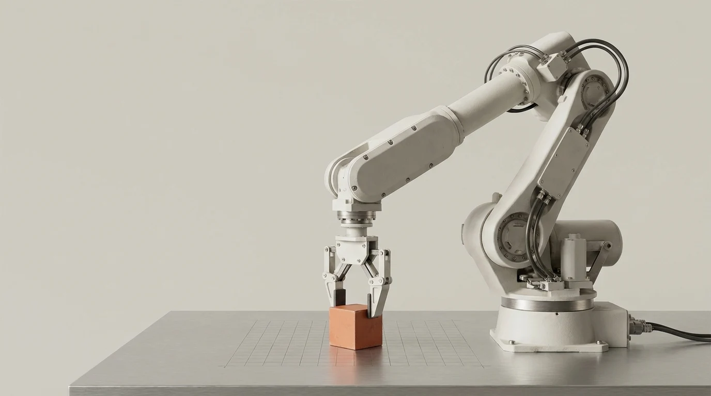

Make the task testable.
Describe the behavior, the success criterion and the conditions that should stop an experiment.
AI ROBOTICS / FROM INTENT TO EXPERIMENT
Define the task. Question the data. Make the next experiment worth running.
A local planning workspace. No hardware required.

01 / THE LEARNING LOOP
Progress starts with a precise task and honest evaluation. Kuberix helps you organize the decisions around learning—not pretend that a browser page can train or safely deploy a robot.
Describe the behavior, the success criterion and the conditions that should stop an experiment.
Record your review of rights, synchronization, task coverage and leakage-aware evaluation splits.
Calculate recording time, sample counts and approximate video storage from your own assumptions.
02 / THE TRAINING PLANNER
Bring task intent, dataset checks and collection assumptions together. Export a readable JSON planning document for your team—not an executable robot command.
Open your workspaceNo account. Optional saving on this browser only.
No simulated performance metrics. No fabricated training progress.
03 / BUILD ON OPEN RESEARCH
Explore the official documentation for external robotics tools. These projects are independent of Kuberix; following a link does not connect an environment or start a training job.